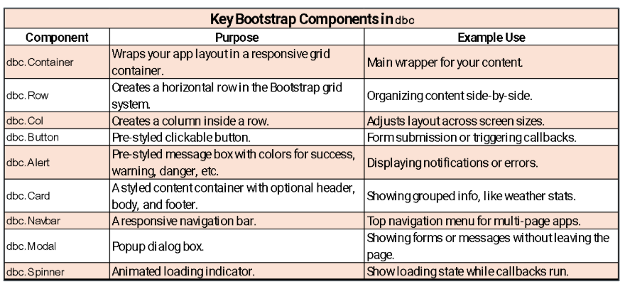
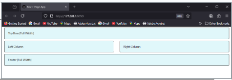

#Import Dash Bootstrap Components
import dash_bootstrap_components as dbc
from dash import html
dbc.Row(
[
dbc.Col(html.Div('One of two Columns')),
dbc.Col(html.Div('One of two Columns'))
]
)Creating a Grid Layout in Dash
Dash Layout Structure
- Dash Default Structure
Component 1
↓Component 2
↓Component 3
- What if used this horizontal layout?
Component 1 →Component 2 → Component 3
Components are stacked vertically (top to bottom).
Useful for dashboards where content is consumed in a specific order (e.g., filters → charts → details).
In Dash, this happens naturally when placing components inside an html.Div() without specifying a grid or flex layout.
Example: A dropdown filter at the top, followed by a summary chart, then a detailed table.
What is Bootstrap?
Bootstrap is a popular framework for front-end web development
Provides grid layout, prebuilt components, and more
Dash Bootstrap Components (dbc & dash-bootstrap-components):
- Dash library provides Bootstrap components (including the grid system layout), stylesheets, and more
Bootstrap layout components
Components for laying out Dash apps, including the grid system
Two main layout components:
Row: container for columns
Col: where the content is placed
Only Col components should be immediate children of the Row component
Top Components in dbc

Creating a Grid Layout: Examples
Layout example 1
Row
- | One of two coulmns | One of two columns |
Layout example 2
Row | A single column |
Row | One of two columns | One of two columns |
#Import Dash Bootstrap Components
import dash_bootstrap_components as dbc
from dash import html
dbc.Row(
dbc.Col(html.Div('A single column'))
),
dbc.Row(
[
dbc.Col(html.Div('One of two columns')),
dbc.Col(html.Div('One of two columns'))
]
)Making a 2-column layout
dash_bootstrap_components lets you plug in a full Bootstrap theme via an external stylesheet. This instantly gives your app Bootstrap’s responsive grid, typography, and utility classes, and it styles all dbc.* components consistently—no custom CSS required.
- You can swap themes (e.g., dbc.themes.COSMO, LUX, MATERIA, CYBORG) for a new look and still override specifics in your own assets/style.css.
from dash import Dash, html
import dash_bootstrap_components as dbc
app = Dash(__name__, external_stylesheets=[dbc.themes.BOOTSTRAP])
app.title = "Multi Layout App"- Embedded stylesheets in Dash are simple Python dictionaries you attach via the style prop
box_style = {
"border": "2px solid black",
"borderRadius": "5px",
"margin": "5px",
"padding": "20px",
"backgroundColor": "#e0f7fa"
}Perfect for quick, local styling and prototypes.
For shared, consistent styling across a multi-page app, shift most rules to an external stylesheet in assets/ and reserve embedded styles for small overrides.
app.layout = dbc.Container([
##first row
dbc.Row(
dbc.Col(html.Div("Top Row (Full Width)", style=box_style), width=12)),
dbc.Row([
dbc.Col(html.Div("Left Column", style=box_style)),
dbc.Col(html.Div("Right Column", style=box_style))
]),
dbc.Row(dbc.Col(html.Div("Footer (Full Width)", style=box_style), width=12))
], fluid=True)
if __name__ == "__main__":
app.run(debug=True)
Creating a Multi-Layout App with Weather API
# MultiLayoutWeather.py
import requests
import pandas as pd #for data frame and manipulation
from dash import Dash, html, dcc, Input, Output
import dash_bootstrap_components as dbc #for bootstrap components
import plotly.express as px #for data visualization
# ---------- Public API helper (Open-Meteo) ----------
#selecting the cities and their coordinates
# This is a dictionary mapping city names to their latitude and longitude.
CITY_COORDS = {
"Williamsburg": (37.2707, -76.7075),
"Richmond": (37.5407, -77.4360),
"Virginia Beach": (36.8529, -75.9780),
"Roanoke": (37.27097, -79.94143),
"Charlottesville": (38.0293, -78.4767)
}
Fetching the Hourly Temperature
Create a function fetch_hourly_temp(lat, lon) that takes a latitude/longitude and returns a Pandas DataFrame of next 48 hours of hourly temperatures.
Builds API URL: Uses the Open-Meteo forecast endpoint with query params, where an endpoint is the specific URL where an API resource or service can be accessed.
latitude, longitude,
hourly=temperature_2m,
forecast_days=2 (≈48 hours),
timezone=auto.
Calls the API safely:
- requests.get(…, timeout=15) and r.raise_for_status() to surface HTTP errors (raises an exception if the HTTP request failed).
Parses JSON:
Extracts the “hourly” block, specifically the arrays “time” and “temperature_2m”.
The 2m means the temperature is measured (or modeled) at 2 meters above ground level.
Constructs a DataFrame with two columns:
time and temp_C (temperature in °C from temperature_2m).
Cleans timestamps by converting the time column to proper datetime objects with pd.to_datetime.
Returns the final DataFrame of hourly timestamps and temperatures for the requested location.
def fetch_hourly_temp(lat: float, lon: float) -> pd.DataFrame:
"""Fetch next-48-hours hourly temperature."""
url = (
"https://api.open-meteo.com/v1/forecast"
f"?latitude={lat}&longitude={lon}"
"&hourly=temperature_2m&forecast_days=2&timezone=auto"
)
r = requests.get(url, timeout=15)
r.raise_for_status()
data = r.json()["hourly"]
df = pd.DataFrame({"time": data["time"], "temp_C": data["temperature_2m"]})
df["time"] = pd.to_datetime(df["time"])
return dfUsing a Theme for an External Stylesheet

https://www.dash-bootstrap-components.com/docs/themes/explorer/
Use Ctrl + I to inspect and select a class or style you would like to apply.
Applying Classes from the Theme
A top bar (navbar) is built using a Div as the container.
Inside the navbar, a large heading displays Open-Meteo Dashboard in white text.
A smaller subtitle follows, showing Public API – Multi-column layout in white text.
The navbar itself uses Bootstrap classes to style it with:
a dark background,
white text suitable for dark themes,
extra padding on the sides,
and spacing below to separate it from the rest of the page.
# ---------- Dash App ----------
app = Dash(__name__, external_stylesheets=[dbc.themes.BOOTSTRAP])
app.title = "Open-Meteo Dashboard"
# Top bar
navbar = html.Div(
[
html.H3("Open-Meteo Dashboard", className="text-white"),
html.Span("Public API - Multi-column layout", className="text-white"),
],
className="navbar navbar-dark bg-dark mb-4 px-3"
)CSS: Using ID’s vs Classes
In a multipage Dash app, a single external stylesheet in assets/ is best because it centralizes all styles, ensures consistent look-and-feel across pages, and keeps page files clean—change the CSS once and every page updates automatically.
Bonus benefits: no duplicated inline styles, faster iteration and theming, browser caching for performance, and clear separation of concerns (layout in Python, styling in CSS).
ID (id)
Purpose: identifies one unique element on a page; in Dash it’s also used to wire callbacks.
CSS selector: #my-id (matches id=“my-id”).
Specificity: higher than a class (wins conflicts).
Class (class)
Purpose: labels elements for reusable styling; can be applied to many elements.
CSS selector: .btn-strong (matches class=“btn-strong”)
Specificity: lower than an ID.
ID selectors (#…) are more specific than class selectors (….). Prefer classes for reusable styles; reserve IDs for unique elements or overrides.
Setting the Controls
# Controls (left column)
controls = dbc.Card([
dbc.CardHeader("Controls"),
dbc.CardBody(
[
dbc.Label("City"),
dcc.Dropdown(
id="city-dd",
options=[{"label": k, "value": k} for k in CITY_COORDS.keys()],
value="Williamsburg",
clearable=False,
),
html.Br(),
dbc.Button("Refresh", id="refresh", n_clicks=0, className="w-100"),
html.Hr(),
html.Small(
"Data source: open-meteo.com (no API key required).",
className="text-muted",
),
]
),
],className="mb-3",)This code builds a tidy “Controls” panel—city selector and refresh button—with Bootstrap spacing/utilities and IDs ready for your Dash callbacks.
Creates a “Controls” panel using a card layout: a titled header with the interactive elements grouped in the body for clarity.
Presents a primary input via a labeled dropdown so the user can pick from a predefined list (with a sensible default to avoid empty states).
“label” → what the user sees in the dropdown
“value” → the actual value passed into callbacks
Provides an explicit action with a prominent, full-width button that the user clicks to (re)run whatever update/refresh your callbacks perform.
Uses simple spacing elements (line break and divider) to separate inputs from helper text and keep the panel readable.
Shows lightweight helper text (e.g., attribution or instructions) in a muted, smaller style to de-emphasize it while keeping it visible.
Designed for callback wiring: the dropdown supplies the selection; the button acts as the trigger; the card is easy to place as a left column in a responsive grid.
Follows Bootstrap conventions for consistent styling, spacing, and accessibility (clear label, large click target, predictable layout).
Setting Top Row and Middle Column
# KPI cards (top row center/right)
def kpi_card(title, id_):
return dbc.Card(
dbc.CardBody(
[
html.H6(title, className="text-muted mb-1"),
html.H3(id=id_, className="mb-0"),
]
),
className="h-100",
)
kpi_row = dbc.Row(
[
dbc.Col(kpi_card("Current Temp (°C)", "kpi-now"), md=4),
dbc.Col(kpi_card("Min (°C/48h)", "kpi-min"), md=4),
dbc.Col(kpi_card("Max (°C/48h)", "kpi-max"), md=4),
],
className="g-3 mb-3",
)
# Chart (middle column)
chart_card = dbc.Card(
[
dbc.CardHeader("Hourly Temperature (next 48h)"),
dbc.CardBody(dcc.Graph(id="temp-chart", config={"displayModeBar": False})),
]
)Lines 3–12 — kpi_card function
A helper function that creates a Bootstrap Card for displaying Key Performance Indicators (KPIs).
Takes two parameters:
title: The label for the KPI (e.g., “Current Temp (°C)”).
id_: The HTML id for the numeric value so it can be updated dynamically in callbacks.
The card body contains:
An html.H6 for the title (muted text, small bottom margin).
An html.H3 for the actual KPI value placeholder (no bottom margin).
className=“h-100” ensures the card fills the column height.
Lines 14–21 — kpi_row
Creates a Bootstrap row with three columns, each holding one KPI card:
Current temperature (id=“kpi-now”).
Minimum temperature over 48h (id=“kpi-min”).
Maximum temperature over 48h (id=“kpi-max”).
md=4 means each column takes 4/12ths of the width on medium+ screens.
className=“g-3 mb-3” adds spacing between columns (g-3) and bottom margin (mb-3).
Lines 24–29 — chart_card
Creates a Bootstrap card for the hourly temperature chart.
The header is “Hourly Temperature (next 48h)”.
The body contains a Dash Graph (dcc.Graph) with:
id=“temp-chart” for callbacks.
config={“displayModeBar”: False} to hide the plotly toolbar.
Defining the App.layout
# Stats table (right column)
table_card = dbc.Card(
[
dbc.CardHeader("Summary Stats"),
dbc.CardBody(html.Div(id="stats-table")),
]
)
# ---------- Layout: Multi-column grid ----------
app.layout = dbc.Container(
[
navbar,
dbc.Row(
[
# Left: controls (md=3)
dbc.Col(controls, md=3),
# Middle: KPIs + chart (md=6)
dbc.Col([kpi_row, chart_card], md=6),
# Right: stats table (md=3)
dbc.Col(table_card, md=3),
],
className="g-3",
),
html.Footer(
html.Small(
"Built with Dash + dash-bootstrap-components • Layout uses Row/Col grid",
className="text-muted",
),
className="mt-4",
),
],
fluid=True,
)Lines 3–8 — table_card
Creates a Bootstrap Card to display summary statistics.
CardHeader(“Summary Stats”) is the title.
CardBody contains a Div with id=“stats-table” so it can be populated dynamically via a callback.
Lines 11–35 — app.layout
The main page layout wrapped in a dbc.Container with fluid=True so it uses the full screen width.
First element inside: navbar (the top navigation bar defined earlier).
Main row (dbc.Row) divided into three columns:
Left column (md=3) → contains the controls card.
Middle column (md=6) → contains the KPI row (kpi_row) and the chart card (chart_card) stacked vertically.
Right column (md=3) → contains the table_card for summary stats.
className=“g-3” on the row adds consistent gutter spacing between columns.
Lines 26–30 — Footer
Adds a small, muted text footer that says:
“Built with Dash + dash-bootstrap-components • Layout uses Row/Col grid”className=“mt-4” adds margin above the footer for spacing.
Callbacks and Chart
# ---------- Callbacks ----------
@app.callback(
[
Output("temp-chart", "figure"),
Output("kpi-now", "children"),
Output("kpi-min", "children"),
Output("kpi-max", "children"),
Output("stats-table", "children"),
],
[Input("city-dd", "value"), Input("refresh", "n_clicks")],
)
def update(city, _):
lat, lon = CITY_COORDS[city]
df = fetch_hourly_temp(lat, lon)
# KPIs
now = df.iloc[0]["temp_C"]
tmin = df["temp_C"].min()
tmax = df["temp_C"].max()
# Chart
fig = px.line(df, x="time", y="temp_C", markers=True, title=None)
fig.update_layout(margin=dict(l=10, r=10, t=10, b=10), yaxis_title="°C", xaxis_title="Time")Lines 3–10 — Callback definition
@app.callback([…], […]) defines a Dash callback with five outputs:
The figure for the temperature chart (“temp-chart”).
The value text for current temp KPI (“kpi-now”).
The value text for min temp KPI (“kpi-min”).
The value text for max temp KPI (“kpi-max”).
The HTML for the stats table (“stats-table”).
Inputs are:
The selected city from the dropdown (“city-dd” value).
The refresh button click count (“refresh” n_clicks).
Lines 12–13 — Get city coordinates & data
Looks up the latitude/longitude for the chosen city from CITY_COORDS.
Calls fetch_hourly_temp(lat, lon) to get hourly temperature data as a DataFrame (df).
Lines 16–18 — KPI values
now: The current temperature (first row in “temp_C” column).
tmin: The minimum temperature over the dataset.
tmax: The maximum temperature over the dataset.
Lines 21–22 — Chart creation
Uses plotly.express.line to plot “temp_C” vs “time”, with markers and no title.
Adjusts margins and axis labels.
Summary and Return
# Stats table
summary = (
df.assign(Date=df["time"].dt.date)
.groupby("Date")["temp_C"]
.agg(["min", "max", "mean"])
.round(1)
.rename(columns={"min": "Min °C", "max": "Max °C", "mean": "Avg °C"})
.reset_index()
)
table = dbc.Table.from_dataframe(summary, striped=True, bordered=False, hover=True)
fmt = lambda x: f"{x:.1f}"
return fig, fmt(now), fmt(tmin), fmt(tmax), table
if __name__ == "__main__":
app.run(debug=True)Lines 1-9— Stats table creation
Creates a daily summary table by:
Extracting the date from “time”.
Grouping by “Date”.
Aggregating min, max, and mean temperatures.
Rounding values to 1 decimal place.
Renaming columns for display.
Resetting the index.
Converts this DataFrame into a Bootstrap table (dbc.Table.from_dataframe) with striped=True and hover=True.
Line 12 — Formatting function
fmt is a lambda function that formats a number to 1 decimal place with f”{x:.1f}“.
lambda x: → declares a tiny function that takes one argument, x.
f”{x:.1f}” → returns a formatted string showing x with one decimal place.
Line 13— Callback return values
The chart (fig).
Formatted current temperature.
Formatted min temp.
Formatted max temp.
The stats table.